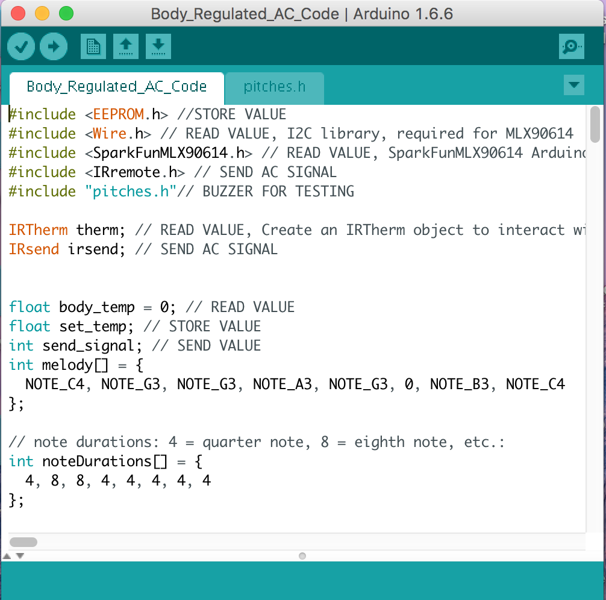
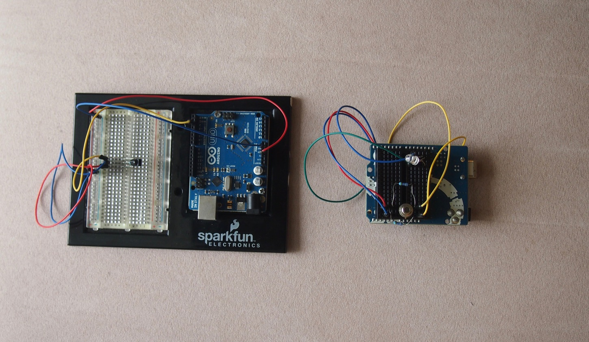
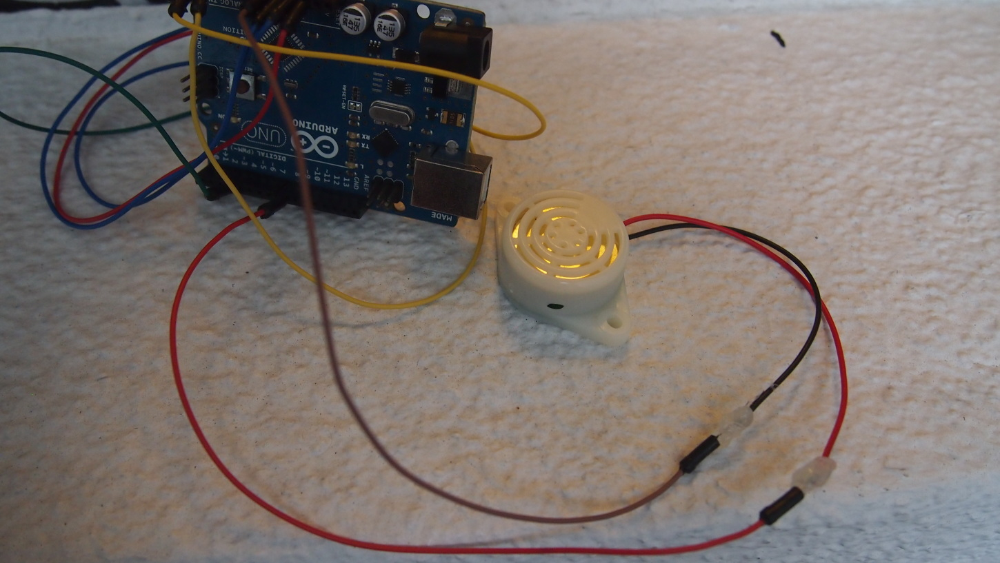
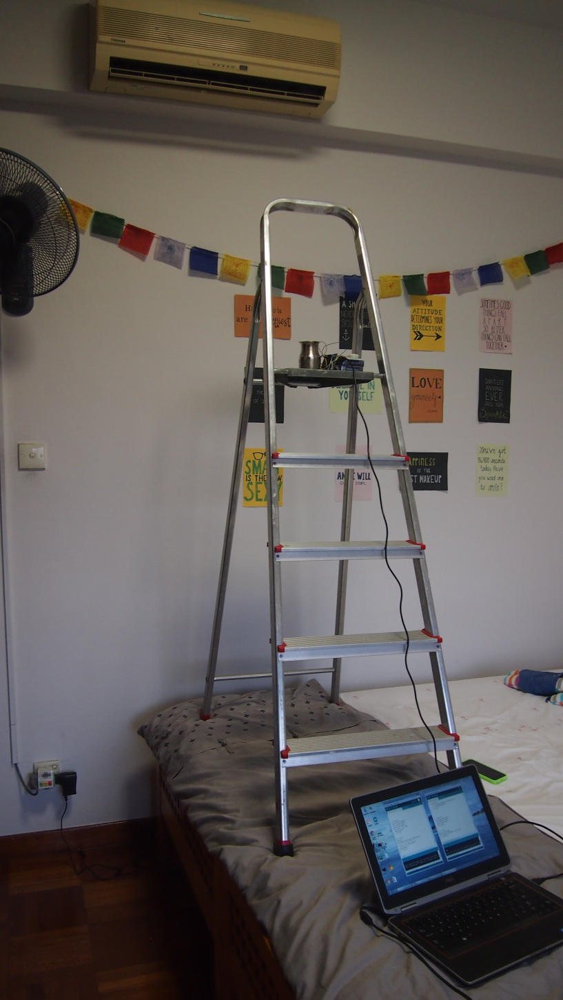
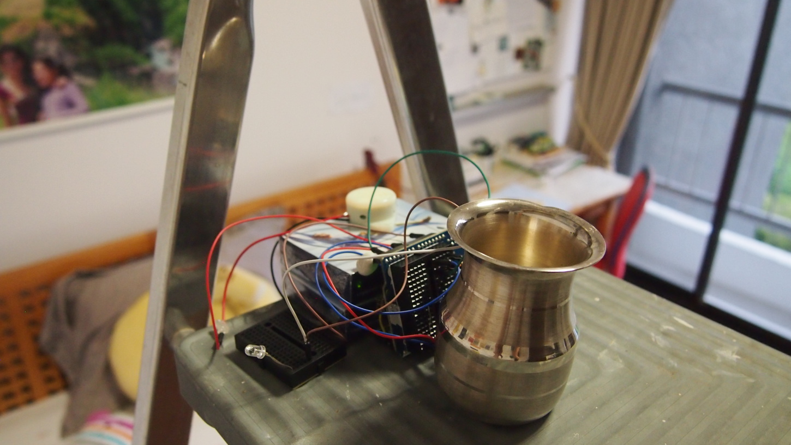

4. Wired an IR temperature sensor. Used to measure the user's finger temperature, an indication of their comfort bc of vasoconstriction/vasodilation
5. Testing the sensor on ice cream

6. Wrote & debugged program that asks user for their ideal body temp, reads their actual temp, then constantly adjusts the AC setpoint using IR transmitter to maintain comfort

7. Miniaturized prototype

8. Wired & coded peizzo buzzer mechanism for testing purposes

9. Prototype testing setup

10. Used water to emmulate human skin. When the boiling water reached the inputted ideal tempeture, the buzzer went off, indicating how long the process took. Result: 63°C -> 25°C in 24 minutes